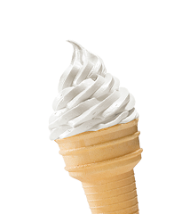
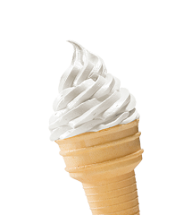

Магазин мороженого CandyShop

Готовим мороженое из самых свежих сливок!

Готовим мороженое из самых свежих сливок!
191186, Санкт-Петербург, ул. Большая Конюшенная, д. 19/8
+7 (812) 275-75-75
mail@htmlacademy.ru
Теперь переход по ссылке не происходит, и мы можем заменить вывод в консоль на добавление класса modal--show элементу из переменной popup.
Мы уже разобрались с синтаксисом событий и объектом event, но не обсудили ещё кое-что. Возможно, запись добавления обработчика показалась вам необычной.
button.addEventListener('click', function () {
// Инструкции
});
Мы передаём одну функцию в качестве параметра в другую функцию — в addEventListener. Такая запись может удивить, но это обычная практика — в JavaScript так делать можно. Тем более вы уже передавали функции в другие функции раньше!
var getString = function () {
return 'Привет из функции!';
}
console.log(getString); // Выведет код функции
console.log(getString()); // Выведет: Привет из функции!
Мы передали функцию и вызов функции в console.log. А ведь console.log() — тоже функция!
В случае с обработчиком мы делаем то же самое, только не записываем функцию в переменную.
console.log(function () {
return 'Привет из функции!';
});
// Выведет код функции
console.log(function () {
return 'Привет из функции!';
}());
// Выведет: Привет из функции!
У такой функции нет своего имени, она не записана в переменную. Мы создаём её там же, где передаём в другую функцию. Такие функции, которые создаются в момент передачи и не имеют названия, называются анонимными функциями.
Обратите внимание на самую важную часть — мы передаём функцию в обработчики, а не вызываем её. Если мы вызовем обработчик, код из него сразу выполнится, и в нужный момент наши инструкции не сработают. Код выполнится только один раз в момент вызова и больше не будет повторяться. Этораспространённая ошибка , но так делать неправильно.
// Так добавлять обработчик неправильно
button.addEventListener('click', function () {
console.log('Клик по кнопке');
}());
// В консоль сразу же выведется сообщение: Клик по кнопке
Вообще JavaScript выполняет программу последовательно, команду за командой. Но к событиям это не относится. Дело в том, что события не происходят последовательно, синхронно. Мы настраиваем обработчик, но инструкции выполняются не сразу, а только тогда, когда произойдёт событие. Это может произойти и через 5 минут после открытия сайта, и через 10, а может пользователь вообще не кликнет по ссылке или кнопке. Тогда событие не случится. События асинхронны, то есть происходят не по расписанию в какое-то конкретное время, друг за другом, а тогда, когда понадобится. В этом главная сила событий.
Допишем наш код, чтобы попап появлялся на странице после клика по кнопке «Показать контакты».
var popup = document.querySelector('.modal');
var openPopupButton = document.querySelector('.button-open');
openPopupButton.addEventListener('click', function (evt) {
evt.preventDefault();
console.log('Клик по кнопке');
});
var popup = document.querySelector('.modal');
var openPopupButton = document.querySelector('.button-open');
openPopupButton.addEventListener('click', function (evt) {
evt.preventDefault();
popup.classList.add('modal--show');
});